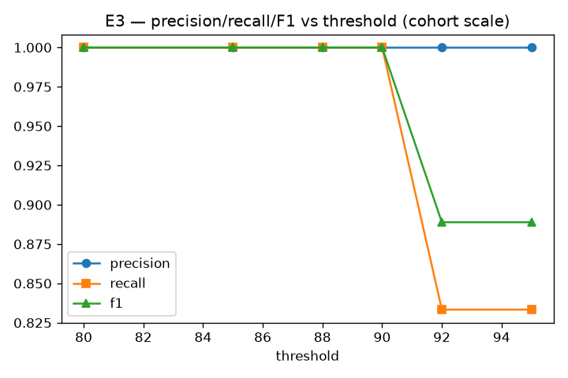

| threshold | precision | recall | f1 | n_seeds |
|---|---|---|---|---|
| 80 | 1.000 | 1.000 | 1.000 | 3 |
| 85 | 1.000 | 1.000 | 1.000 | 3 |
| 88 | 1.000 | 1.000 | 1.000 | 3 |
| 90 | 1.000 | 1.000 | 1.000 | 3 |
| 92 | 1.000 | 0.833 | 0.889 | 3 |
| 95 | 1.000 | 0.833 | 0.889 | 3 |
| blocking_recall | auto_resolution_rate | miss_normalize | miss_blocking | miss_scoring | miss_threshold |
|---|---|---|---|---|---|
| 1.000 | 0.833 | 0 | 0 | 0 | 0 |